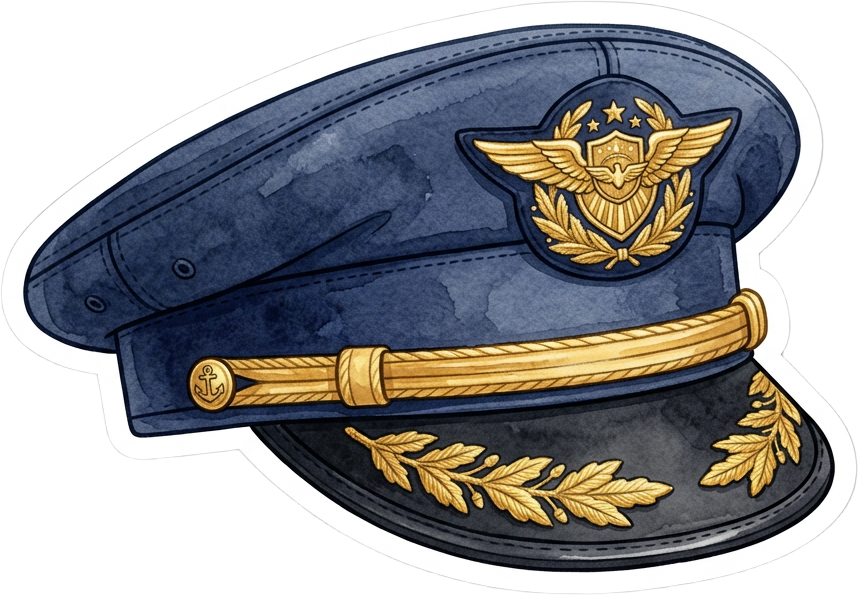
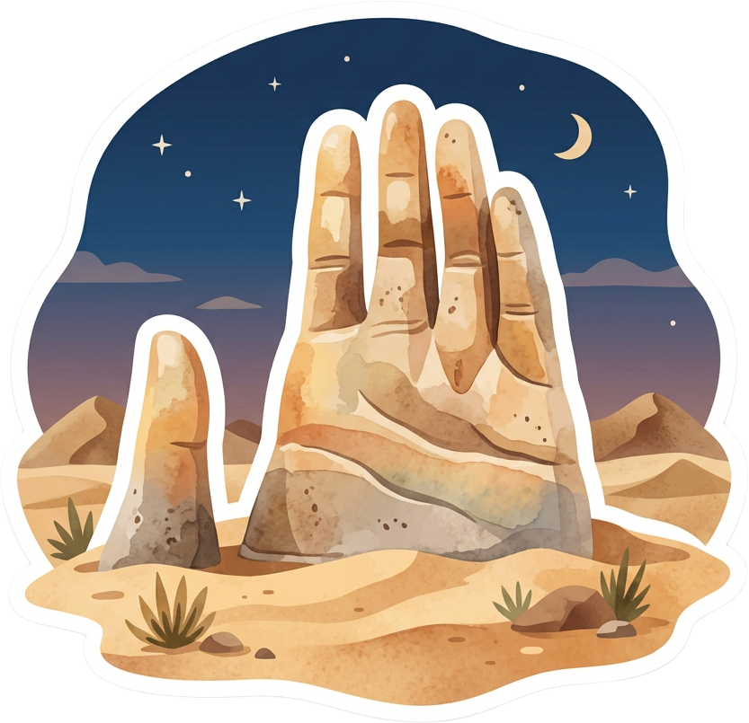
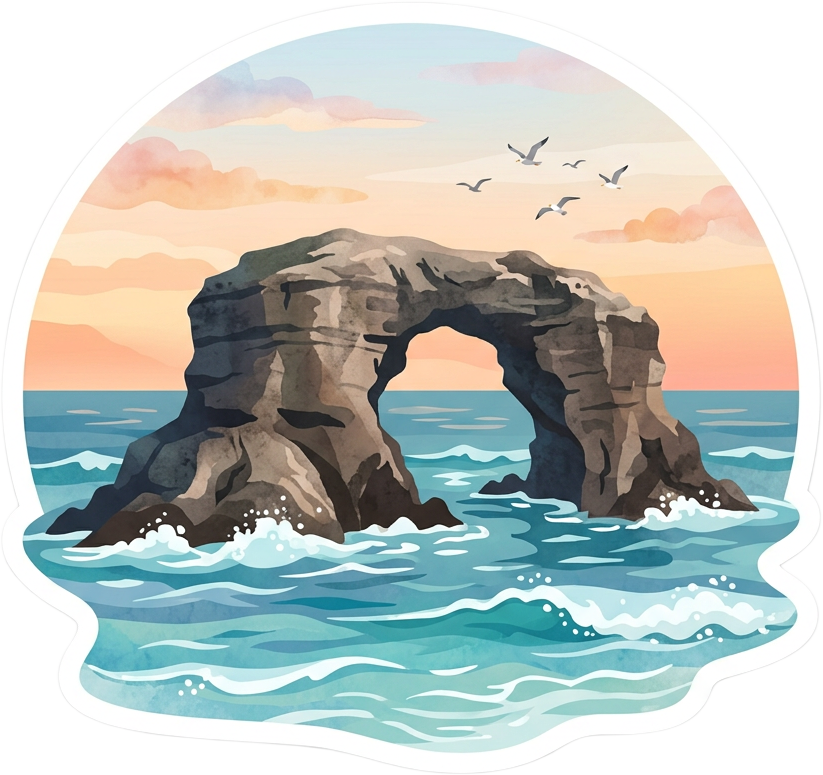
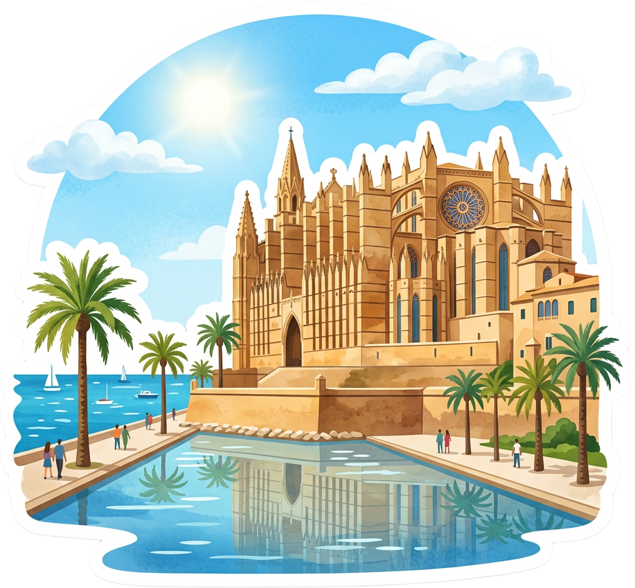
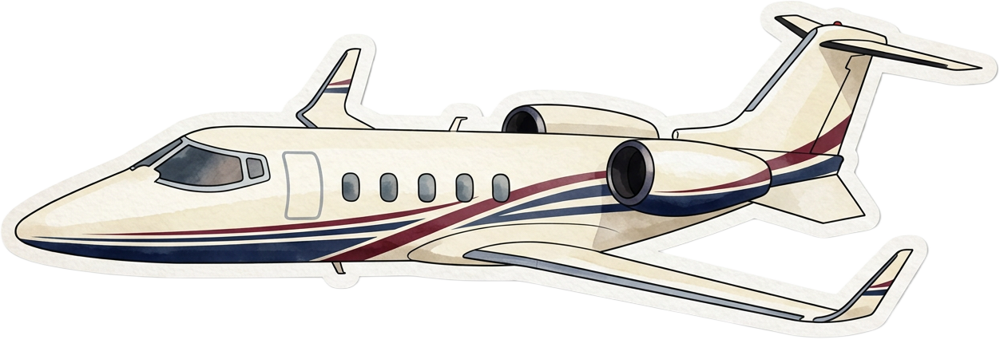
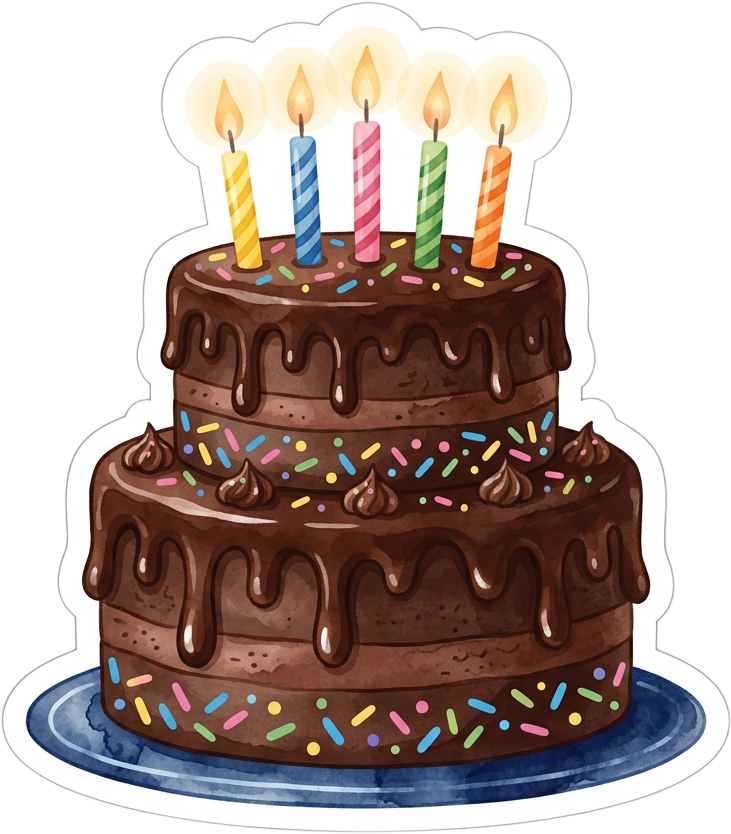
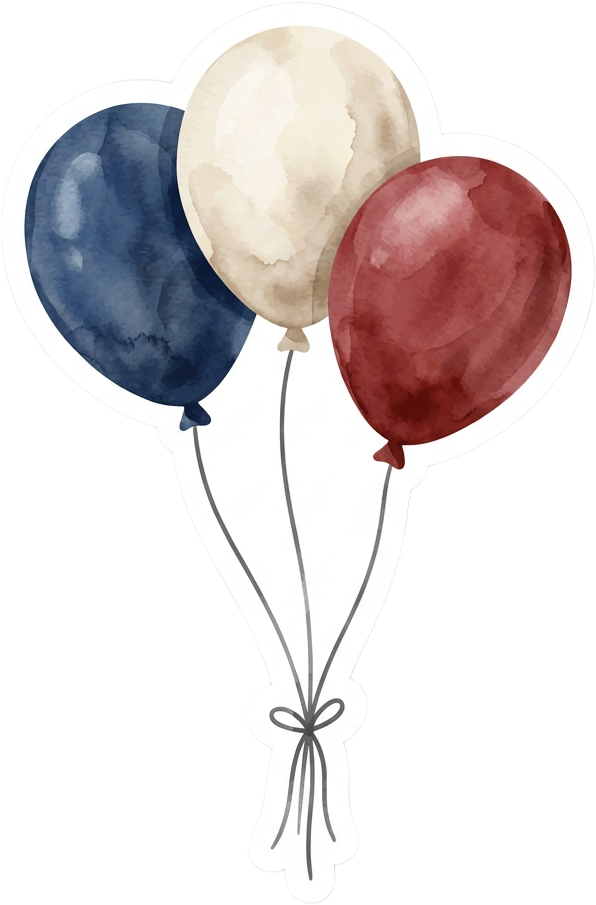

Para ti,
Feliz
cumpleaños
mi amor
Todo empezó aquí…

Mi primer amor
…y el amor de mi vida
Nuestro desierto,
nuestro mar



De Antofagasta
a Mallorca…
siempre contigo
Y entre un viaje y otro…
la vida de todos los días
…tú eres mi lugar favorito.



Gracias por cada día.
Soy feliz
viviendo mi vida
a tu lado.
Feliz
cumpleaños,
mi amor